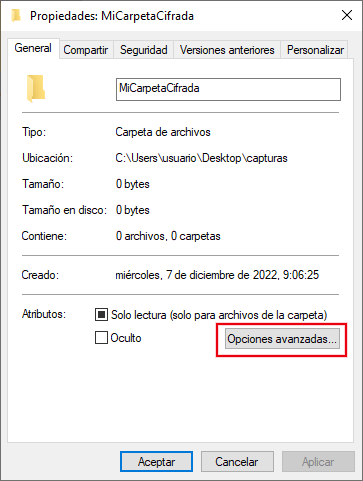
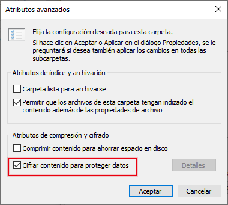
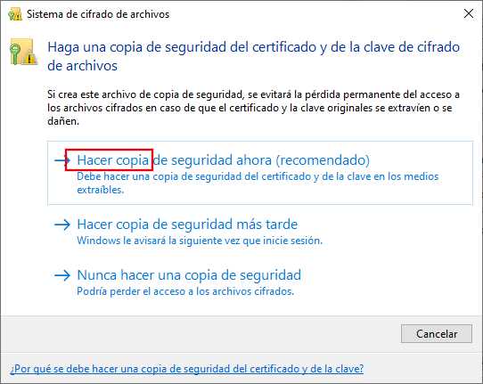

5.2. Confidencialidad¶
Establecer un adecuado control sobre el acceso a los datos, de modo que sólo accedan aquellos que legítimamente pueden hacerlo es fundamental en la gestión de la información bien por secreto empresarial, bien por salvaguardar la privacidad de los datos personales de empleados y clientes (véase la legislación sobre protección de datos).
Por ello es fundamental clasificar la información según su grado de confidencialidad:
- Confidencial,
que es información especialmente sensible para la organización o bien que contiene datos de carácter personal especialmente sensibles, para cuyo tratamiento:
Debe identificarse como tal.
Debe definirse estrictos controles de acceso para que sean exclusivamente accesibles para la dirección o para aquellos empleados que necesiten conocerla para poder desempeñar su función.
Si es preciso sacar la información de las instalaciones, debe cifrarse.
Debe cumplir las exigencias del RGPD.
- Interna
que es información propia de la organización accesible a todos sus empleados como la política de seguridad o el directorio de personal, para cuyo tratamiento:
Debe identificarse como tal.
Debe ser accesible a todo el personal.
Salvo indicación contraria de la dirección, no debe difundirse fuera de la organización.
- Pública
que es información que general la empresa para su difusión universal, por lo que no está sujeta a restricción alguna. Tal es el caso de la página web o los catálogos de productos. No recibe ningún tratamiento especial.
Ya se han enumerado las medidas que contribuyen a la confidencialidad de los datos:
El control de accesos:
Físico, que comprende todos los mecanismos que limitan físicamente el acceso a los dispositivos de almacenamiento.
Lógico, que comprende tanto la autenticación como los mecanismos de control sobre el acceso.
Ambos son asunto de la unidad «Entorno físico y acceso», por lo que no se tratarán en esta.
El cifrado de datos.
La eliminación efectiva de datos, cuando es preciso sustituir el dispositivo de almacenamiento.
5.2.1. Cifrado de datos¶
Los fundamentos de la criptografía se tratan en la unidad sobre «Criptografía», por lo que aquí nos centraremos exclusivamente en ver su aplicación al crifrado de datos, el cual exige, desde un punto de vista práctico y funcional, que las operaciones de cifrado y descifrado se hagan de manera transparente, esto es, sin que el usuario tenga que utilizar las herramientas criptográficas cada que vez que desee guardar o leer un fichero.
5.2.1.1. Fundamentos teóricos¶
Están referidos en el apartado «Cifrado de discos» y es importante conocer y entender cuáles son las cuatro estrategias posibles.
5.2.1.2. Práctica¶
La práctica relativa a Linux se encuentra en el apartado ya indicado, aunque puede resultar un poco árida, porque exige bastante uso de la línea de órdenes. De las cuatro estrategias, la más sencilla de practicar es la que usa el propio sistema de archivos (ext4) y, si se quiere impartir una, esa es la más apropiada.
La práctica en Windows (menos árida y más apropiada para este nivel medio) se explicará aquí mismo.
EFS
EFS es la característica del sistema de archivos NTFS que implementa su cifrado (aunque no está disponibles en las versiones Home). Las claves de su funcionamiento son las siguientes:
Cada archivo se cifra simétricamente con una clave generada ad hoc denominada FEK.
Para proteger la FEK, se cifra con la clave pública de un certificado digital de usuario.
El certificado de usuario se guarda en el almacén de certificados de Windows, de modo que, mientras esté ahí, el usuario no tendrá problemas en acceder a los archivos cifrados.
Puede habilitar el cifrado de un archivo individual o el cifrado de un directorio (lo que provocará que todos los archivos incluidos en él estén cifrados). Para hacerlo basta con abrir el cuadro de diálogo «Propiedades» del archivo o directorio:
y, al pulsar sobre Opciones avanzadas, podremos ver la posibilidad cifrar su contenido:
La operación habrá acabado a menos que no se disponga de un certificado para cifrar archivos en cuyo caso Windows creará uno y nos dará la opción de almacenar una copia en un archivo p12 (creado con extensión pfx):
Es conveniente almacenar en un lugar seguro esa certificado por si lo necesitamos en un futuro. Además, podemos consultar el certificado para comprobar que se encuentra instalado.
BitLocker
Es la herramienta proporcionada por el propio Windows para el cifrado (aunque no se incluye en las versiones Home). Permite cifrar sistemas de archivos, no archivos individuales. Daremos preferencia a la siguiente solución.
Veracrypt
Tiene la ventaja de que es software libre y permite:
Crear un dispositivo virtual dentro del cual todos los archivos y directorios estén cifrados.
Cifrar dispositivos de datos.
Cifrar el sistema de archivos donde se encuentra el propio sistema operativo.
En este artículo de redeszone.net sobre Veracrypt desarrolla cómo hacer cada una de ellas.
Como ejercicios pueden realizarse:
5.2.2. Eliminación de datos¶
La eliminación de datos se explica en el epígrafe sobre eliminación efectiva de datos. En él se da suficiente base teórica, pero la aplicación práctica se desarrolla exclusivamente en Linux. Para complementarlo, es necesario revisar cómo de forma práctica se puede eliminar datos en Windows. En consecuencia, el epígrafe se debe abordar del siguiente modo:
Atender a la teoría expresada allí para entender que se deben eliminar datos de forma efectiva y no borrar datos sin más.
Saber que existen dos estrategias (la basada en sobrescribir los datos y la basada en la funcionalidad de borrado seguro del firmware del disco) y tener claro que no hay que usar la primera de ellas, por las razones que se aducen.
Estudiar y prácticar la segunda estrategia:
Mediante Linux con lo desarrollado en ese epígrafe.
Mediante Windows con diskpart que puede ejecutarse desde un disco de instalación de Windows 10 (u 11) y cuyo uso viene explicado en este artículo de Tom’s hardware